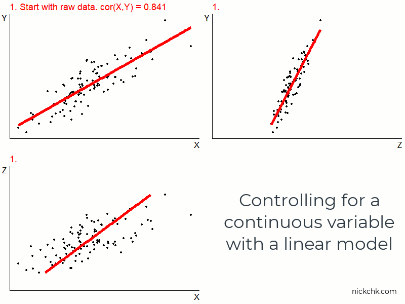

Last week was all about handling sampling variation and avoiding inference error
This week we’re all about endogeneity!
Where it pops up and what we can do about it
At least as a starter (we’ll revisit this topic many times)
Recap
We believe that our true model looks like this:
\[Y = \beta_0 + \beta_1X+\varepsilon\]
Where \(\varepsilon\) is everything that determines \(Y\) other than \(X\)
If \(X\) is related to some of those things, we have endogeneity
Estimating the above model by OLS, it will mistake the effect of those other things for the effect of \(X\), and our estimate of \(\hat{\beta}_1\) won’t represent the true \(\beta_1\) no matter how many observations we have
Endogeneity Recap
For example looking at income and corruption, the model
The true \(\beta_1\) is probably \(0\). But since \(Political Stability\) is in \(\varepsilon\) and \(olitical Stability\) is related to \(Corruption\), OLS will mistakenly assign the effect of \(olitical Stability\) to the effect of \(Corruption\), making it look like there’s a positive effect when there isn’t one
If \(olitical Stability\) hangs around \(Corruption\), but OLS doesn’t know about it, OLS will give \(Corruption\) all the credit for \(olitical Stability\)’s impact on \(Income\)
Here we’re mistakenly finding a positive effect when the truth is \(0\), but it could be anything - negative effect when truth is \(0\), positive effect when the truth is a bigger/smaller positive effect, negative effect when truth is positive, etc. etc.
To the Rescue
One way we can solve this problem is through the use of control variables
What if \(Political Stability\)weren’t in \(\varepsilon\)? Then we’d be fine! OLS would know how to separate out its effect from the \(Corruption\) effect. How do we take it out? Just put it in the model directly!
Now we have a multivariate regression model. Our estimate \(\hat{\beta}_1\) will not be biased by \(Political Stability\) because we’ve controlled for it
(probably more accurate to say “covariates†or “variables to adjust for†than “control variables†and “adjust for†rather than “control for†but hey what are you gonna do, “control†is standard)
To the Rescue
So the task of solving our endogeneity problems in estimating \(\beta_1\) using \(\hat{\beta}_1\) comes down to us finding all the elements of \(\varepsilon\) that are related to \(X\) and adding them to the model
As we add them, they leave \(\varepsilon\) and hopefully we end up with a version of \(\varepsilon\) that is no longer related to \(X\)
If \(cov(X,\varepsilon) = 0\) then we have an unbiased estimate!
(of course, we have no way of checking if that’s true - it’s based on what we think the data generating process looks like)
How?
How does this actually work?
Controlling for a variable works by removing variation in \(X\) and \(Y\) that is explained by the control variable
So our estimate of \(\hat{\beta}_1\) is based on just the variation in \(X\) and \(Y\) that is unrelated to the control variable
Any accidentally-assigning-the-value-of-PoliticalStability-to-Corruption can’t happen because we’ve removed the effect of \(Political Stability\) on \(Corruption\) as well as the effect of \(Political Stability\) on \(Income\)
We’re asking at that point, holding \(Political Stability\) constant, i.e. comparing two different countries with the same \(Polities\), how is \(Corruption\) related to \(Income\)?
Example
The true effect is \(\beta_1 = 3\). Notice \(Z\) is binary and is related to \(X\) and \(Y\) but isn’t in the model!
tib <-tibble(Z =1*(rnorm(1000) >0)) %>%mutate(X = Z +rnorm(1000)) %>%mutate(Y =2+3*X +2*Z +rnorm(1000))feols(Y~X, data = tib) %>%etable()
Now, Y_mean and X_mean are the mean of Y and X for the values of Z, i.e. the part of Y and Xexplained by Z. So subtract those parts out to get residualsY_res and X_res!
tib <- tib %>%mutate(Y_res = Y - Y_mean, X_res = X - X_mean)head(tib)
Compare this to actually including Z as a control:
feols(Y ~ X + Z, data = tib) %>%etable()
.
Dependent Var.: Y
Constant 1.988*** (0.0441)
X 3.030*** (0.0319)
Z 1.993*** (0.0712)
_______________ _________________
S.E. type IID
Observations 1,000
R2 0.93782
Adj. R2 0.93769
---
Signif. codes: 0 '***' 0.001 '**' 0.01 '*' 0.05 '.' 0.1 ' ' 1
Graphically
Controlling
We achieve all this just by adding the variable to the OLS equation!
We can, of course, include more than one control, or controls that aren’t binary
Use OLS to predict \(X\) using all the controls, then take the residual (the part not explained by the controls)
Use OLS to predict \(Y\) using all the controls, then take the residual (the part not explained by the controls)
Now do OLS of just the \(Y\) residuals on just the \(X\) residuals
A Continuous Control

What do we get?
We can remove some of the relationship between \(X\) and \(\varepsilon\)
Potentially all of it, making \(\hat{\beta}_1\) us an unbiased (i.e. correct on average, but sampling variation doesn’t go away!) estimate of \(\beta_1\)
Maybe we can also get some estimates of \(\beta_2\), \(\beta_3\)… but be careful, they’re subject to the same identification and endogeneity problems!
Often in econometrics we focus on getting one parameter, \(\hat{\beta}_1\), exactly right and don’t focus on parameters we haven’t put much effort into identifying
Concept Checks
Selene is a huge bore at parties, but sometimes brings her girlfriend Donna who is super fun. If you regressed \(PartyFunRating\) on \(SeleneWasThere\) but not \(DonnaWasThere\), what would the coefficient on \(SeleneWasThere\) look like and why?
Describe the steps necessary to estimate the effect of \(Exports\) on \(GrowthRate\) while controlling for \(AmountofConflict\) (a continuous variable). There are three “explain/regress†steps and two “subtract†steps.
If we estimate the same \(\hat{\beta}_1\) with or without \(Z\) added as a control, does that mean we have no endogeneity problem? What does it mean exactly?
Have We Solved It?
Including controls for every part of (what used to be) \(\varepsilon\) that is related to \(X\) clears up any endogeneity problem we had with \(X\)
So… when we add a control, does that do it? How do we know?
Inconveniently, the data alone will never tell us if we’ve solved endogeniety
We can’t just check \(X\) against the remaining \(\varepsilon\) because we never see\(\varepsilon\) - what we have left over after a regression is the real-world residual, not the true-model error
Causal Diagrams
“What do I have to control for to solve the endogeneity problem†is an important and difficult question!
To answer it we need to think about the data-generating process
One way to do that is to draw a causal diagram
A causal diagram describes the variables responsible for generating data and how they cause each other
Once we have written down our diagram, we’ll know what we need to control for
(hopefully we have data on everything we need to control for! Often we don’t)
Drawing a Diagram
Endogeneity is all about the alternate reasons why two variables might be related *other than the causal effect you want
We can represent all the reasons two variables are related with a diagram
Put down on paper how you think the world works, and where you think the data came from! This is economic modeling but with less math
List out all the variables relevant to the DGP (including the ones we can’t measure or put our finger on!)
Draw arrows between them reflecting what causes what else
List all the paths from \(X\) to \(Y\) - these paths are reasons why \(X\) and \(Y\) are related!
Control for at least one variable on each path you want to close (isn’t the effect you want)
Drawing a Diagram
Drawing a Diagram
We observe that, in the data, \(ShortsWearing\) and \(IceCreamEating\) are related. Why?
Maybe, we theorize, that wearing shorts causes you to eat ice cream ( \(ShortsWearing \rightarrow IceCreamEating\) )
However, there’s another explanation/path: \(Temperature\) causes both ( \(ShortsWearing \leftarrow Temperature \rightarrow IceCreamEating\) )
We need to control for temperature to close this path!
Once it’s closed, the only path left is \(ShortsWearing \rightarrow IceCreamEating\), so if we do see a relationship still in the data, we know we’ve identified the causal effect
Detailing Paths
The goal is to list all the paths that go from the cause of our choice to the outcome variable (no loops)
That way we know what we need to control for to close the paths!
Control for any one variable on the path, and suddenly there’s no variation from that variable any more - the causal chain is broken and the path is closed!
A path counts no matter which direction the arrows point on it (the arrow direction matters but we’ll get to that next time)
If the path isn’t part of what answers our research question, it’s a back door we want to be closed
Preschool and Adult Earnings
Does going to preschool improve your earnings as an adult?
We want the ways that \(Preschool\) causes \(Earnings\) - that’s the first two, \(Preschool \rightarrow Earnings\) and \(Preschool \rightarrow Skills \rightarrow Earnings\)
The rest we want to close! They’re back doors
\(Location\) is on #3, so if we control for \(Location\), 3 is closed
\(Background\) is on the rest, so if we control for \(Background\), the rest are closed
So if we estimate the below OLS equation, \(\hat{\beta}_1\) will be unbiased!
This assumes that the model we drew was accurate. Did we leave any important variables or arrows out? Think hard!
What other variables might belong on this graph? Would they be on a path that gives an alternate explanation?
Just because we say that’s the model doesn’t magically make it the actual model! It needs to be right! Use that economic theory and common sense to think about missing parts of the graph
Also, can we control for those things? What would it mean to assign a single number for \(Background\) to someone? Or if we’re representing \(Background\) with multiple variables - race, gender, parental income, etc., how do we know if we’ve fully covered it?
And the Bad News…
Regardless, this is the kind of thinking (whether or not you do that thinking with a causal diagram) we have to do to figure out how to identify things by controlling for variables
There’s no way to get around having to make these sorts of assumptions if we want to identify a causal effect
Really! No way at all! Even experiments have assumptions
The key is not avoiding assumptions, but making sure they’re reasonable, and verifying those assumptions where you can
An Example
Let’s back off of those concerns a moment and generate the data ourselves so we know the truth!
In the below data generating process, what is the true effect of \(X\) on \(Y\)?
Let’s figure out how to draw the causal diagram for this data generating process!
(note: U1, U2, etc., often stand in as an unobserved common cause for two variables that are correlated but we think neither causes the other)
tib2 <-data.frame(U1 =rnorm(1000), A =rnorm(1000), B =rnorm(1000)) %>%mutate(C = U1 +rnorm(1000), D = U1 +rnorm(1000)) %>%mutate(X = A + C +rnorm(1000)) %>%mutate(Y =4*X + A + B + D +rnorm(1000))m1 <-feols(Y~X, data = tib)coef(m1)
(Intercept) X
2.756197 3.420627
The Diagram
Here’s the diagram we can draw from that information. What paths are there from X to Y?
The Paths
\(X \rightarrow Y\)
\(X \leftarrow A \rightarrow Y\)
\(X \leftarrow C \leftarrow U_1 \rightarrow D \rightarrow Y\)
What do we need to control for to close all the paths we don’t want? Assume we can’t observe (and so can’t control for) \(U_1\)
The Adjusted Analysis
Remember, the true \(\beta_1\) was 4
m1 m2 m3
Dependent Var.: Y Y Y
Constant 2.756*** (0.0461) -0.0261 (0.0584) 0.0218 (0.0455)
X 3.421*** (0.0383) 4.004*** (0.0600) 4.003*** (0.0290)
A 1.044*** (0.0846) 0.9848*** (0.0549)
C 0.4827*** (0.0739)
D 0.9827*** (0.0368)
_______________ _________________ __________________ __________________
S.E. type IID IID IID
Observations 1,000 1,000 1,000
R2 0.88897 0.96089 0.97624
Adj. R2 0.88886 0.96077 0.97617
---
Signif. codes: 0 '***' 0.001 '**' 0.01 '*' 0.05 '.' 0.1 ' ' 1
Concept Checks
Why did we only need to control for \(C\)or\(D\) in that last example?
Draw a graph with five variables on it: \(X\), \(Y\), \(A\), \(B\), \(C\). Then draw arrows at them completely at random (except to ensure there’s no “loop†where you can follow an arrow path from arrow base to head and end up where you started). Then list every path from \(X\) to \(Y\) and say what you’d need to control for to identify the effect
What would you need to control for to estimate the effect of “drinking a glass of wine a day†on “lifespan� Draw a diagram.